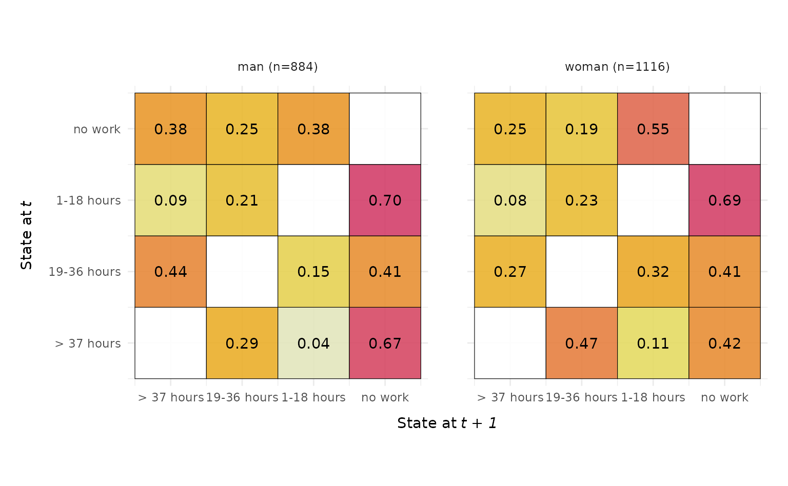
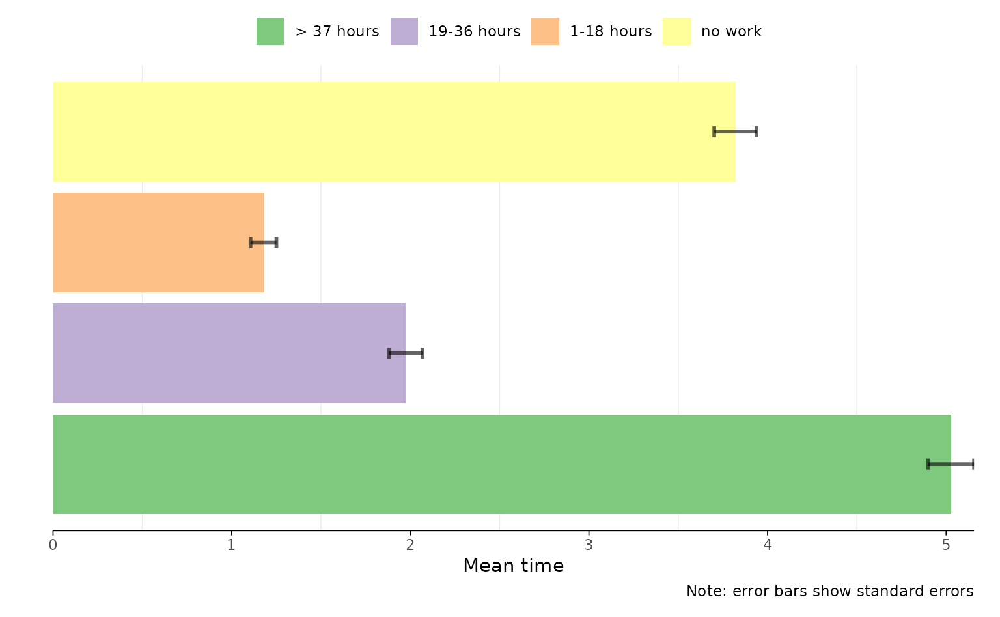
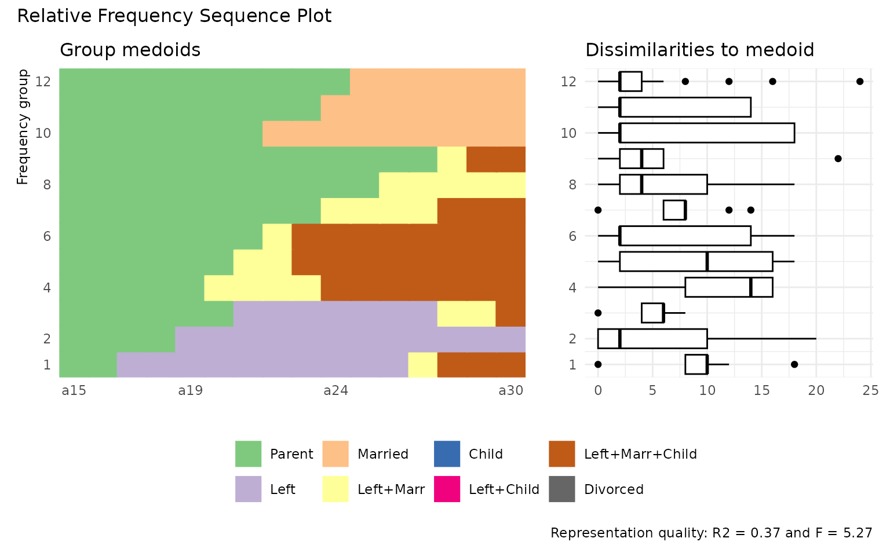

Prelude
Following Fasang and Liao (2014), we distinguish between sequence representation and summarization graphs. The latter aggregate and summarize the information stored in the sequence data without plotting actual observed sequences. Given the complexity of sequence data, these type of plots focus on one or two dimensions of information stored in sequence data (Brzinsky-Fay, 2014). Among the diverse members of the family of summarization graphs are sequence transitions plot, Kaplan-Meier survival curves, modal state plots, mean time plots, state distribution plots, and entropy plots (Fasang & Liao, 2014; Raab & Struffolino, 2022).
{ggseqplot}
includes five summarization graphs:
- state distribution plots (
ggseqdplot) - entropy line plots (
ggseqplot) - modal state sequence plot (
ggseqmsplot) - mean time plot (
ggseqmtplot) - transition rate plots (
ggseqtrplot)
Whereas summarization graphs aggregate the sequence data,
representation plots always display actually observed sequences. In the
most basic form of the traditional sequence index plot all observed
sequences are displayed. In data sets with several hundred cases this
kind of visualization, however, cannot be reasonably applied because of
the issue of overplotting. In such a scenario individual sequences are
partly plotted on top of each other and the resulting graph would be an
inaccurate representation of the underlying sequence data. In response
to this issue alternative representation plots which only render a
subset of the sequences have been suggested. {ggseqplot}
allows to render both the traditional sequence index plots and
representation plots of subsets of sequences. Specifically, the library
contains the following plot types:
- sequence index plot (
ggseqiplot) - sequence frequency plot (
ggseqfplot) - representative sequence plot (
ggseqrplot) - relative frequency sequence plot (
ggseqrfplot)
For a more detailed discussion of sequence visualization I recommend the following articles/book chapters: Brzinsky-Fay (2014), Fasang and Liao (2014) and Chapter 2 of Raab & Struffolino (2022).
With the exception of the transition rate plot all of the plots
listed above can be also produced with {TraMineR}. In total, those two
libraries provide a much more comprehensive set of plots and often allow
for more options than {ggseqplot}. Hence, if you are an experienced user
base R’s plot (which is used to render the {TraMineR} plots), there is no real
need to make yourself acquainted with {ggseqplot}.
{ggseqplot}
was written because like many other R users I prefer {ggplot2} to base R’s plot
environment for visualizing data. {TraMineR} (Gabadinho et al., 2011) was developed before {ggplot2} (Wickham, 2016) was as popular as it is today
and back then many users were more familiar with coding base R plots. To
date, however, many researchers and students are more accustomed to
using {ggplot2} and prefer to draw on the
related skills and experiences instead of learning how to refine base R
plots just for the single purpose of visualizing sequence data.
This vignette outlines how sequence data generated with
TraMineR::seqdef are reshaped to plot them as ggplot2-typed
figures using {ggseqplot}.
More specifically, it gives an overview of the general procedure and
depicts which {TraMineR} and {ggplot2} functions are used to render
the plots
The vignette further illustrates how the appearance of plots produced
with {ggseqplot}
can be changed using {ggplot2} functions and extensions.
Setup example
We start by loading the required libraries and defining the sequence
data to be plotted. We draw in the examples from the {TraMineR} for setting up the
examples.
Click to see code for installing and loading required packages
## ~~~~~~~~~~~~~~~~~~~~~~~~~~~~~~~~~~~~~~~~~~~~~~~~~~~~~~~
## Load and download (if necessary) required packages ----
## ~~~~~~~~~~~~~~~~~~~~~~~~~~~~~~~~~~~~~~~~~~~~~~~~~~~~~~~
## Save package names as a vector of strings
pkgs <- c("colorspace", "ggplot2", "ggthemes", "hrbrthemes",
"patchwork", "purrr", "TraMineR")
## Install uninstalled packages
lapply(pkgs[!(pkgs %in% installed.packages())],
install.packages, repos = getOption("repos")["CRAN"])
## Load all packages to library and adjust options
lapply(pkgs, library, character.only = TRUE)
## Don't forget to load ggseqplot
library(ggseqplot)
## ~~~~~~~~~~~~~~~~~~~~~~~~~~~~~~~~~~~~~~~~~~~~~~~~~~~~~~~~~~~
## Creating state sequence objects from example data sets ----
## ~~~~~~~~~~~~~~~~~~~~~~~~~~~~~~~~~~~~~~~~~~~~~~~~~~~~~~~~~~~
## biofam data
data(biofam)
biofam.lab <- c("Parent", "Left", "Married", "Left+Marr",
"Child", "Left+Child", "Left+Marr+Child", "Divorced")
biofam.seq <- seqdef(biofam[501:600, ], 10:25, # we only use a subsample
labels = biofam.lab,
weights = biofam$wp00tbgs[501:600])
## actcal data
data(actcal)
actcal.lab <- c("> 37 hours", "19-36 hours", "1-18 hours", "no work")
actcal.seq <- seqdef(actcal,13:24,
labels=actcal.lab)
## ex1 data
data(ex1)
ex1.seq <- seqdef(ex1, 1:13,
weights=ex1$weights)Note that the default figure size in this document is specified as:
fig.width=8, fig.height=4.94
Technicalities
In general, all {ggseqplot}
functions operate in the similar way: they extract the data to be
plotted using a state sequence object generated with
TraMineR::seqdef as a staring point. The functions either
simply use (a subset of) the sequence data stored in this object or call
other {TraMineR} functions such as
TraMineR::seqstatd to obtain the information to be plotted.
Under the hood {ggseqplot}
reshapes those data to visualize them using {ggplot2} functions. Usually this means
that the data have to be reshaped into a long (tidy) format.
The following example illustrates the procedure for the case of a state distribution plot. The cross-sectional state distributions across the positions of the sequence data can be obtained by:
seqstatd(actcal.seq)
#> [State frequencies]
#> jan00 feb00 mar00 apr00 may00 jun00 jul00 aug00 sep00 oct00 nov00 dec00
#> A 0.421 0.420 0.421 0.417 0.419 0.42 0.42 0.42 0.42 0.418 0.414 0.415
#> B 0.162 0.162 0.162 0.162 0.162 0.16 0.16 0.17 0.17 0.169 0.170 0.171
#> C 0.098 0.098 0.098 0.097 0.097 0.10 0.10 0.10 0.10 0.096 0.096 0.098
#> D 0.320 0.321 0.320 0.324 0.322 0.32 0.32 0.31 0.31 0.318 0.320 0.317
#>
#> [Valid states]
#> jan00 feb00 mar00 apr00 may00 jun00 jul00 aug00 sep00 oct00 nov00 dec00
#> N 2000 2000 2000 2000 2000 2000 2000 2000 2000 2000 2000 2000
#>
#> [Entropy index]
#> jan00 feb00 mar00 apr00 may00 jun00 jul00 aug00 sep00 oct00 nov00 dec00
#> H 0.9 0.9 0.9 0.9 0.9 0.9 0.9 0.91 0.91 0.9 0.91 0.91When calling ggseqdplot these distributional data are
reshaped into a long data set in which every row stores the (weighted)
relative frequency of a given state at a given position along the
sequence. The example data actcal.seq contain sequences of
length 12 with an alphabet comprising 4 states. The reshaped data
serving as source for the {ggplot2} call thus contain \(12\times4=48\) rows. If a group vector is
specified, the respective data will comprise 48 rows for each group. The
data set produced by ggseqdplot can be accessed if the
function’s output is assigned to an object. The resulting list object
stores the data as its first element (named data).
dplot <- ggseqdplot(actcal.seq)
dplot$data
#> # A tibble: 48 × 6
#> group state k x value grouplab
#> <fct> <fct> <fct> <fct> <dbl> <fct>
#> 1 1 > 37 hours jan00 1 0.421 Rel. Freq. (n=2000)
#> 2 1 > 37 hours feb00 2 0.420 Rel. Freq. (n=2000)
#> 3 1 > 37 hours mar00 3 0.422 Rel. Freq. (n=2000)
#> 4 1 > 37 hours apr00 4 0.418 Rel. Freq. (n=2000)
#> 5 1 > 37 hours may00 5 0.420 Rel. Freq. (n=2000)
#> 6 1 > 37 hours jun00 6 0.42 Rel. Freq. (n=2000)
#> 7 1 > 37 hours jul00 7 0.422 Rel. Freq. (n=2000)
#> 8 1 > 37 hours aug00 8 0.420 Rel. Freq. (n=2000)
#> 9 1 > 37 hours sep00 9 0.418 Rel. Freq. (n=2000)
#> 10 1 > 37 hours oct00 10 0.418 Rel. Freq. (n=2000)
#> # ℹ 38 more rowsOnce the data are in the right shape {ggseqplot}
functions produce graphs using {ggplot2} functions. In the case of the
state distribution plot, for instance, ggseqdplot renders
stacked bar charts for each sequence position using
ggplot2::geom_bar.
The following table gives an overview of the most important internal
function calls used to render different plot types with {ggseqplot}
| ggseqplot function | TraMineR function | ggplot2 geoms and extensions |
|---|---|---|
ggseqdplot |
TraMineR::seqstatd |
ggplot2::geom_baroptional: geom_line
|
ggseqeplot |
TraMineR::seqstatd |
ggplot2::geom_line |
ggseqmsplot |
TraMineR::seqmodst |
ggplot2::geom_bar |
ggseqmtplot |
TraMineR::seqmeant |
ggplot2::geom_bar |
ggseqtrplot |
TraMineR::seqtrate |
ggplot2::geom_tile |
ggseqiplot |
TraMineR::seqformat |
ggplot2::geom_rect |
ggseqfplot |
TraMineR::seqtab |
ggplot2::geom_rect{ggh4x} (for the axis labeling if group
has been specified) |
ggseqrplot |
TraMineR::seqrep |
ggplot2::geom_rectggrepel::geom_text_repel{ggtext} (for optional colored axis
labels){patchwork} (to combine plots) |
ggseqrfplot |
TraMineR::seqrfplot |
ggplot2::geom_rectggplot2::geom_boxplot{patchwork} (to combine plots) |
The appearance of most of the plots generated with {ggseqplot}
can be adjusted just like every other ggplot (e.g., by changing the
theme or the scale using + and the respective functions).
Representative sequence plots and relative frequency sequence plots,
however, behave differently because they are composed of multiple plots
which are arranged by the {patchwork} library. The following
section illustrates how the appearance of the plots can be changed
Changing the appearance of plots
The default case
As mentioned above, most plots rendered by {ggseqplot}
are of class c("gg", "ggplot") and can be adjusted just
like other plots rendered with {ggplot2}
Example 1: State distribution plot
In our first example we illustrate this for state distribution plot.
We start with the most basic version of the plot visualizing the state
distributions of actcal.seq without changing any of the
defaults.
# ggseqplot::ggseqdplot
ggseqdplot(actcal.seq)
We proceed by illustrating how {ggplot2} functions & extensions
can be used to refine the default outcome. Just like every other {ggplot2} figure the appearance of
plots generated with {ggseqplot}
functions can be dramatically changed with a few adjustments:
ggseqdplot(actcal.seq) +
scale_fill_discrete_sequential("heat") +
scale_x_discrete(labels = month.abb) +
labs(title = "State distribution plot",
x = "Month") +
guides(fill=guide_legend(title="Alphabet")) +
theme_ipsum(base_family = "") + # ensures that this works on different OS
theme(plot.title = element_text(size = 30,
margin=margin(0,0,20,0)),
plot.title.position = "plot")
In the following example we again illustrate a few {ggplot2} functions & extensions by
composing a figure comprising two plots produced with
ggseqdplot. Both visualize the same data but only the first
plot considers weights. In addition to state distributions the plots
display the accompanying entropies as line plot
(geom_line). Finally, the plots are brought together using
the {patchwork} library (Pedersen, 2020).
# Save plot using weights
p1 <- ggseqdplot(ex1.seq,
with.entropy = TRUE) +
ggtitle("Weighted data")
# Save same plot without using weights
p2 <- ggseqdplot(ex1.seq,
with.entropy = TRUE,
weighted = FALSE) +
ggtitle("Unweighted data")
# Arrange and refine plots using patchwork
p1 + p2 +
plot_layout(guides = "collect") &
scale_fill_manual(values= canva_palettes$`Fun and tropical`[1:4]) &
theme_ipsum(base_family = "") &
theme(plot.title = element_text(size = 20,
hjust = 0.5),
legend.position = "bottom",
legend.title = element_blank())
Example 2: Transition rate plot
The second set of examples illustrates how to refine a figure of
combined transition rate plots. ggseqtrplot calls
TraMineR::seqtrate to obtain the transition rates between
the states of the alphabet. TraMineR::seqtrate stores these
rates in a symmetrical matrix which internally is reshaped into a long
format with one row for every combination of states (i.e., the squared
size of the sequence alphabet) by ggseqdplot. The reshaped
data are the input for a {ggplot2} call using
geom_tile.
We start with a simple example that only takes the sequence data and the group argument as inputs. The output is a faceted plot visualizing two transition rate matrices of DSS sequence data.
ggseqtrplot(actcal.seq,
group = actcal$sex)
#> [>] computing transition probabilities for states A/B/C/D ...
#> [>] computing transition probabilities for states A/B/C/D ...
In the second example we specify additional arguments and utilize
once again the {patchwork} library to compose a figure
that compares the transition matrices of sequence stored in the STS and
the DSS format.
We use x_n.dodge = 2 to prevent overlapping of the state
labels of the x-axis, slightly reduce the labels size of the value
labels displayed within the tiles, and use dss = FALSE to
compute and display the transition rates of the STS sequences.
p1 <- ggseqtrplot(biofam.seq,
dss = FALSE,
x_n.dodge = 2,
labsize = 3) +
ggtitle("STS Sequences") +
theme(plot.margin = unit(c(5,10,5,5), "points"))
#> [>] computing transition probabilities for states 0/1/2/3/4/5/6/7 ...
p2 <- ggseqtrplot(biofam.seq,
x_n.dodge = 2,
labsize = 3) +
ggtitle("DSS Sequences") +
theme(plot.margin = unit(c(5,5,5,10), "points"))
#> [>] computing transition probabilities for states 0/1/2/3/4/5/6/7 ...
p1 + p2 &
theme(plot.title = element_text(size = 20,
hjust = 0.5))
Other than the grouped version of the plot this composed figure
contains the y-axis title and labels twice. This can be changed with
small adjustments of the corresponding theme arguments.
p2 <- p2 +
theme(axis.text.y = element_blank(),
axis.title.y = element_blank())
p1 + p2 &
theme(plot.title = element_text(size = 20,
hjust = 0.5))Example 3: Flipping coordinates
We conclude this section by illustrating that it is also possible to
flip the coordinates of the plots rendered by {ggseqplot},
a procedure that is widely used in the {ggplot2} universe (although the
coordinates could also be swapped in the aes(x, y, ...)
specification).
In the example below we illustrate the procedure for a mean time plot and a sequence index plot. We always present both, the default plot and the flipped version:
## default plot
ggseqmtplot(actcal.seq, no.n = TRUE, error.bar = "SE") 
## flipped version
ggseqmtplot(actcal.seq, no.n = TRUE, error.bar = "SE") +
coord_flip() +
theme(axis.text.y=element_blank(),
axis.ticks.y = element_blank(),
panel.grid.major.y = element_blank(),
legend.position = "top")
While in the example above the flipped plot might be in greater accordance to most people’s aesthetic preferences, flipping the coordinates in the case of sequence index plots might be a more of an opinionated design choice. Most scholars prefer to display time on the horizontal axis. However, if you favor time to run from the bottom to the top (like in Piccarreta and Lior (2010)) instead of left to right, your preferences can be easily met.
## default plot
ggseqiplot(actcal.seq, sortv = "from.end") +
scale_x_discrete(labels = month.abb)
#> Scale for x is already present.
#> Adding another scale for x, which will replace the existing scale.
## flipped version
ggseqiplot(actcal.seq, sortv = "from.end") +
scale_x_discrete(labels = month.abb) +
coord_flip()
#> Scale for x is already present.
#> Adding another scale for x, which will replace the existing scale.
The special case of combined plots
Two types of plots differ from the other {ggseqplot}
functions because they are composed by two subplots which are arranged
to a joint figure with the {patchwork} library. The output of
those functions cannot be changed in the same was as for the other
functions. For details on the {patchwork} library we recommend the
package’s website.
Example 4: Annotation and themes
Some of the adjustments of a combined {patchwork} plot are pretty similar to
the default {ggplot2} procedure. In the example
below we change the theme and add a title to the plot. Note that the
corresponding functions are not added by + but with
& instead.
## compute dissimilarity matrix required for plot
diss <- seqdist(biofam.seq, method = "LCS")
#> [>] 100 sequences with 8 distinct states
#> [>] creating a 'sm' with a substitution cost of 2
#> [>] creating 8x8 substitution-cost matrix using 2 as constant value
#> [>] 76 distinct sequences
#> [>] min/max sequence lengths: 16/16
#> [>] computing distances using the LCS metric
#> [>] elapsed time: 0.021 secs
## Relative Frequency Sequence Plot
## default version
ggseqrfplot(biofam.seq, diss = diss, k = 12)
#> [>] Using k=12 frequency groups with grp.meth='prop'
#> [>] Pseudo/medoid-based-R2: 0.367766
#> [>] Pseudo/medoid-based-F statistic: 5.268049, p-value: 1.655783e-06
## adjusted version
ggseqrfplot(biofam.seq, diss = diss, k = 12) &
theme_ipsum(base_family = "") &
theme(legend.position = "bottom",
legend.title = element_blank(),
plot.title = element_text(size = 12)) &
plot_annotation(title = "Relative Frequency Sequence Plot")
#> [>] Using k=12 frequency groups with grp.meth='prop'
#> [>] Pseudo/medoid-based-R2: 0.367766
#> [>] Pseudo/medoid-based-F statistic: 5.268049, p-value: 1.655783e-06
If you want to manipulate the appearance of a specific plot, however,
your default code might not work. If you want to change the labels of
the index plot, for instance, the following code will not
produce the desired result, because scale_x_discrete will
change the appearance of the boxplot, i.e. the last plot used when
composing the plot with {patchwork}.
ggseqrfplot(biofam.seq, diss = diss, k = 12) +
scale_x_discrete(labels = 15:30)
#> [>] Using k=12 frequency groups with grp.meth='prop'
#> [>] Pseudo/medoid-based-R2: 0.367766
#> [>] Pseudo/medoid-based-F statistic: 5.268049, p-value: 1.655783e-06The appearance of the subplots, however, can be changed once you save the composite plot and then adjust its components.
## save & view original plot
p <- ggseqrfplot(biofam.seq, diss = diss, k = 12)
#> [>] Using k=12 frequency groups with grp.meth='prop'
#> [>] Pseudo/medoid-based-R2: 0.367766
#> [>] Pseudo/medoid-based-F statistic: 5.268049, p-value: 1.655783e-06
p
## change appearance of sub-plots
## first component: index plot
p[[1]] <- p[[1]] +
scale_x_discrete(labels = 15:30)
#> Scale for x is already present.
#> Adding another scale for x, which will replace the existing scale.
## second component: boxplot
p[[2]] <- p[[2]] + labs(title = "Changed title")
## adjusted plot
pExample 5: The complex case of grouped rplots
Note that things become a little bit more complex in the case of a grouped representative sequence plot. In such a plot each group contributes two subplots. One providing information on the “quality” of the representative sequences, and another one containing the corresponding index plots. If we want to change the x-axis labels of the following plot, we have to extract and change the index plots which appear in the second row of the combined plot. The plots are arranged by row. Hence the index plots are the subplots 3 and 4
## Compute a pairwise dissimilarity matrix
diss <- seqdist(actcal.seq, method = "LCS")
#> [>] 2000 sequences with 4 distinct states
#> [>] creating a 'sm' with a substitution cost of 2
#> [>] creating 4x4 substitution-cost matrix using 2 as constant value
#> [>] 186 distinct sequences
#> [>] min/max sequence lengths: 12/12
#> [>] computing distances using the LCS metric
#> [>] elapsed time: 0.341 secs
## original plot
p <- ggseqrplot(actcal.seq,
diss = diss,
nrep = 3,
group = actcal$sex)
#> [>] number of objects (sum of weights): 884
#> [>] max. distance: 24
#> [>] neighborhood radius: 2.4
#> [>] 3 representative(s) selected
#> [>] 80 distinct sequence(s)
#> [>] number of objects (sum of weights): 1116
#> [>] max. distance: 24
#> [>] neighborhood radius: 2.4
#> [>] 3 representative(s) selected
#> [>] 144 distinct sequence(s)
p
## adjusted sequence index subplots
p[[3]] <- p[[3]] +
scale_x_discrete(labels = month.abb)
#> Scale for x is already present.
#> Adding another scale for x, which will replace the existing scale.
p[[4]] <- p[[4]] +
scale_x_discrete(labels = month.abb)
#> Scale for x is already present.
#> Adding another scale for x, which will replace the existing scale.
p
Example 6: What about grouped rfplots?
Grouped rfplots are currently not implemented for
ggseqrfplot and have to be created manually using the {patchwork} library.
In the following example we
- create rfplots for our groups (here “Men” and “Women”), then proceed by
- slightly misusing
{patchwork}’s tag annotation assigning group-specific tags for the first plot in each row of the final patchwork plot, - removing the legend from the upper plot panel
(
p$man), - and arranging the adjusted patches in a final plot with two stacked panels.
Technically speaking the resulting plot is a nested patchwork plot.
According to the documentation of {patchwork}
[i]t is important to note that plot annotations only have an effect on the top-level patchwork. Any annotation added to nested patchworks are (currently) lost. If you need to have annotations for a nested patchwork you’ll need to wrap it in wrap_elements() with the side-effect that alignment no longer works.1
For this reason the group-specific titles were not added with
patchwork::plot_annotation or ggplot2::ggtitle
and we reverted to the use of tags instead.
diss <- seqdist(biofam.seq, method = "LCS")
#> [>] 100 sequences with 8 distinct states
#> [>] creating a 'sm' with a substitution cost of 2
#> [>] creating 8x8 substitution-cost matrix using 2 as constant value
#> [>] 76 distinct sequences
#> [>] min/max sequence lengths: 16/16
#> [>] computing distances using the LCS metric
#> [>] elapsed time: 0.02 secs
sex <- biofam[501:600, "sex"]
p <- map2(
levels(sex), # input x
c("Men", "Women"), # input y
function(x, y) {
p <- ggseqrfplot(biofam.seq[sex == x,],
diss = diss[sex == x,sex == x],
k = 12)
p[[1]] <- p[[1]] + labs(tag = y)
return(p)
}
)
#> [>] Using k=12 frequency groups with grp.meth='prop'
#> [>] Pseudo/medoid-based-R2: 0.5448432
#> [>] Pseudo/medoid-based-F statistic: 3.408139, p-value: 0.003407164
#> [>] Using k=12 frequency groups with grp.meth='prop'
#> [>] Pseudo/medoid-based-R2: 0.5263291
#> [>] Pseudo/medoid-based-F statistic: 5.687386, p-value: 4.537004e-06
names(p) <- levels(sex)
(p$man & theme(legend.position = "none")) / p$woman